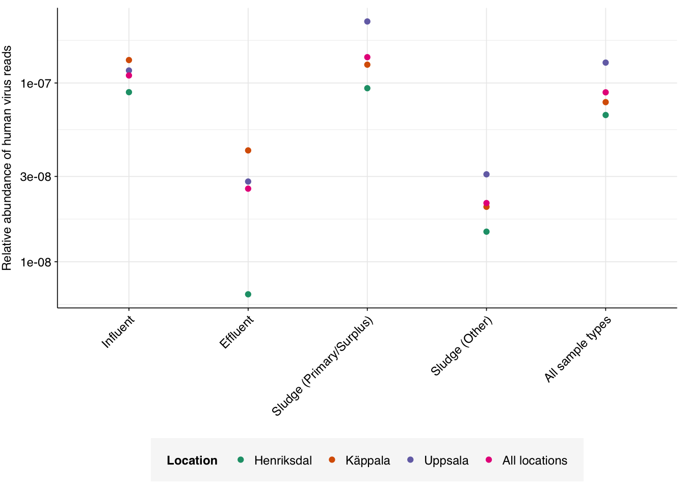
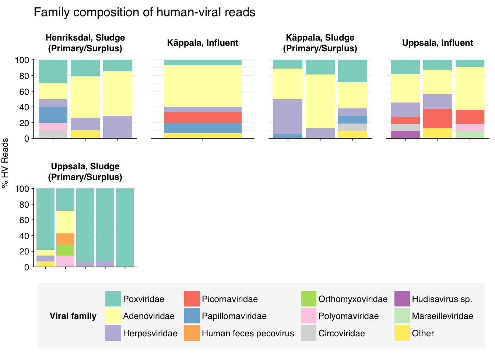
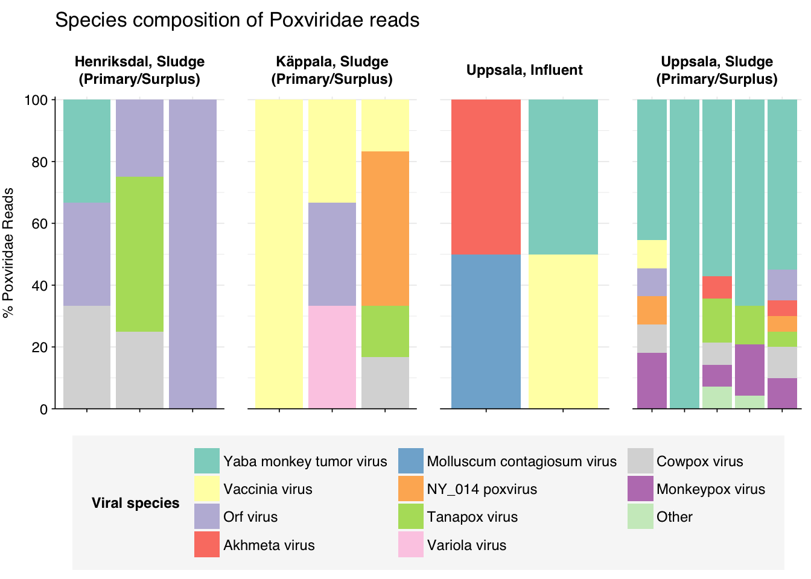
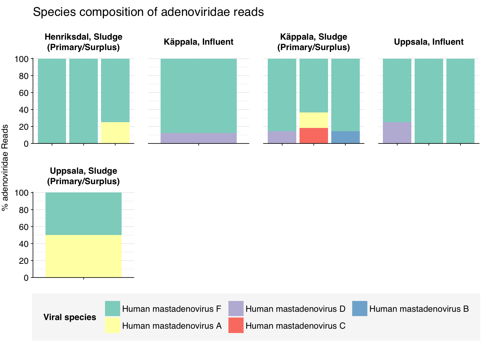
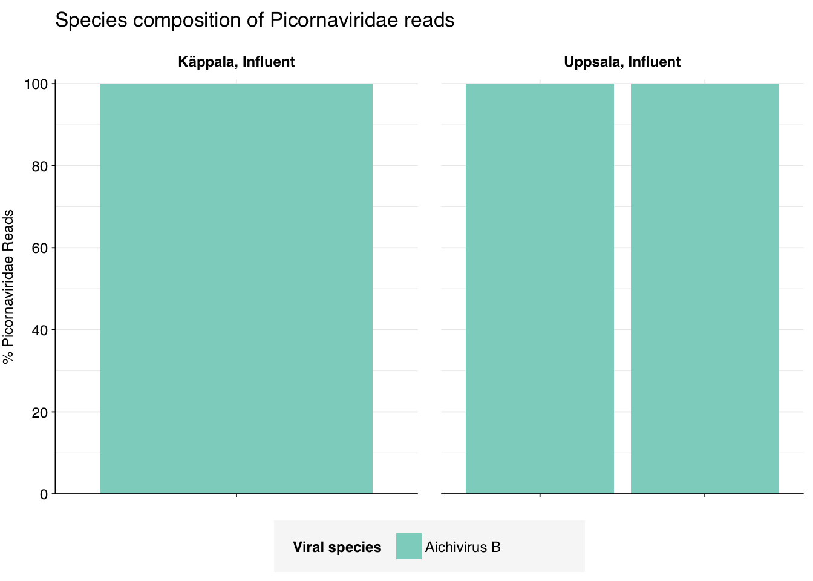
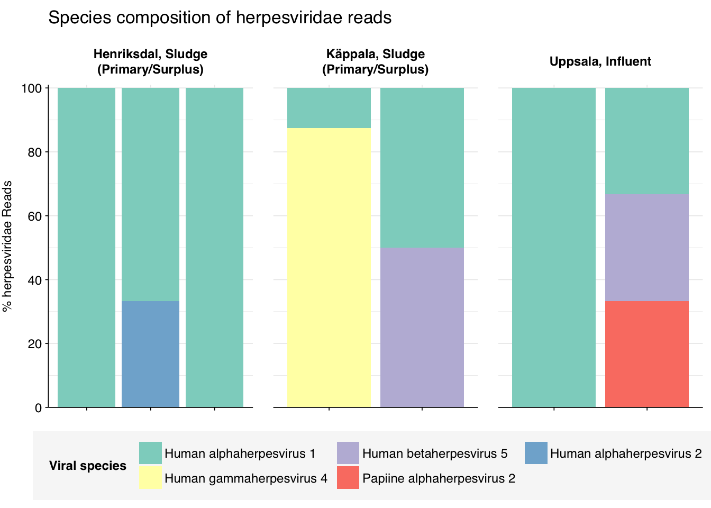
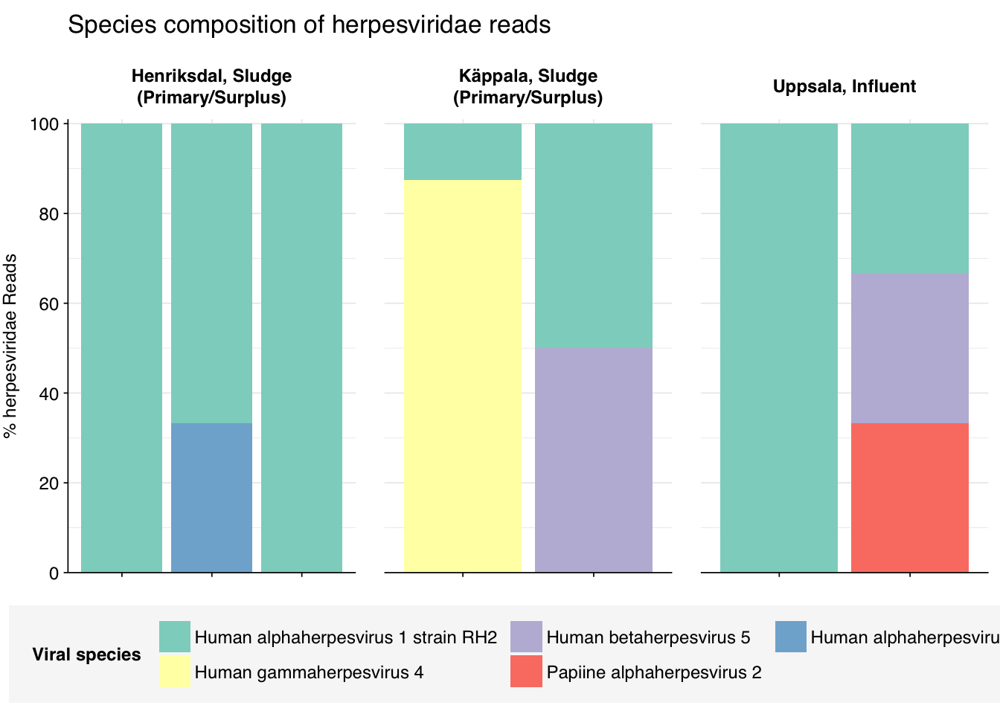
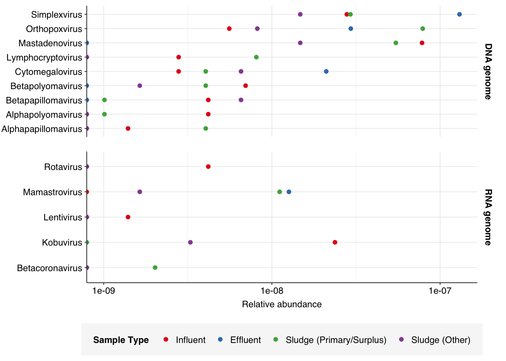

Returning to wastewater datasets, today I’m analyzing Bengtsson-Palme et al. (2016), a study of grab samples taken from three treatment plants in Sweden in September 2012. This was a DNA-sequencing study focused on investigating AMR in sewage communities. Influent, effluent and sludge samples were taken from each location, with a total of 70 samples across all sites: 20 influent, 10 effluent and 40 sludge. Liquid samples were filtered through a 1mm seive, then centrifuged, retaining the pellet (note that we expect this to select against viruses), which was then resuspended and underwent DNA extraction. Sludge samples weren’t concentrated, but went directly to DNA extraction. Samples were sequenced on an Illumina HiSeq 2500, producing 2x101bp reads.
The raw data
The sample composition of the Bengtsson-Palme dataset was as follows:
Code
# Importing the data is a bit more complicated this time as the samples are split across three pipeline runsdata_dir<-"../data/2024-04-30_bengtsson-palme"# Data input pathslibraries_path<-file.path(data_dir, "sample-metadata.csv")basic_stats_path<-file.path(data_dir, "qc_basic_stats.tsv.gz")adapter_stats_path<-file.path(data_dir, "qc_adapter_stats.tsv.gz")quality_base_stats_path<-file.path(data_dir, "qc_quality_base_stats.tsv.gz")quality_seq_stats_path<-file.path(data_dir, "qc_quality_sequence_stats.tsv.gz")# Import libraries and extract metadata from sample nameslibraries_raw<-lapply(libraries_path, read_csv, show_col_types =FALSE)%>%bind_rowslibraries<-libraries_raw%>%# Process sample typesmutate(sample_group =ifelse(grepl("Inlet", sample_type), "Influent",ifelse(grepl("Primary", sample_type), "Sludge (Primary/Surplus)",ifelse(grepl("Surplus", sample_type), "Sludge (Primary/Surplus)",ifelse(grepl("Digested", sample_type), "Sludge (Other)",ifelse(grepl("Kemikond", sample_type), "Sludge (Other)","Effluent"))))), sample_group =factor(sample_group, levels =c("Influent", "Effluent", "Sludge (Primary/Surplus)", "Sludge (Other)")), sludge =grepl("Sludge", sample_group))%>%arrange(location, sample_group, sample)%>%mutate(location =fct_inorder(location), sample =fct_inorder(sample))# Make tablecount_samples<-libraries%>%group_by(sample_group, location)%>%count%>%pivot_wider(names_from ="location", values_from="n")%>%rename(`Sample Type`=sample_group)count_samples
These 70 samples yielded 23.7M-61.3M (mean 38.7M) reads per sample, for a total of 2.7B read pairs (539 gigabases of sequence). Read qualities were mostly high but tailed off towards the 3’ end, requiring some trimming. Adapter levels were high. Inferred duplication levels were low in sludge samples (1-12%, mean 4%) but much higher in liquid samples samples (22-90%, mean 46%), implying lower available sequence diversity in the latter sample groups.
The average fraction of reads lost at each stage in the preprocessing pipeline is shown in the following table. As expected given the observed difference in duplication levels, many more reads were lost during deduplication in liquid samples than sludge samples. Conversely, trimming and filtering consistently removed more reads in sludge than in liquid samples, though the effect was less dramatic than for deduplication. Very few reads were lost during ribodepletion, as expected for DNA sequencing libraries.
According to FASTQC, cleaning + deduplication was very effective at reducing measured duplicate levels, which fell from an average of 45% to 5% in liquid samples and from 6% to 3% in sludge samples:
As before, to assess the high-level composition of the reads, I ran the ribodepleted files through Kraken (using the Standard 16 database) and summarized the results with Bracken. Combining these results with the read counts above gives us a breakdown of the inferred composition of the samples:
# Plot composition of minor componentscomp_minor<-comp%>%filter(classification%in%c("Archaeal", "Viral", "Human", "Other"))palette_minor<-brewer.pal(9, "Set1")[6:9]g_comp_minor<-g_comp_base+geom_col(data=comp_minor, position ="stack")+scale_y_pc_reads()+scale_fill_manual(values=palette_minor, name ="Classification")g_comp_minor
In all sample types, the majority of reads were either filtered, duplicates, or unassigned. Among assigned reads, the vast majority were bacterial, which is unsurprising given the sample processing protocols used. Total viral fraction averaged 0.011% in influent and primary sludge, and considerably lower in effluent and treated sludge. The human fraction was also low, averaging 0.033% across all sample types. Interestingly, treated sludge showed far higher fractions of archaeal reads than other sample types, possibly due to the anaerobic conditions experienced during sludge treatment.
As is common for DNA data, viral reads were overwhelmingly dominated by Caudoviricetes phages:
Code
# Get Kraken reportsreports_path<-file.path(data_dir, "kraken_reports.tsv.gz")reports<-read_tsv(reports_path, show_col_types =FALSE)# Get viral taxonomyviral_taxa_path<-file.path(data_dir, "viral-taxids.tsv.gz")viral_taxa<-read_tsv(viral_taxa_path, show_col_types =FALSE)# Filter to viral taxakraken_reports_viral<-filter(reports, taxid%in%viral_taxa$taxid)%>%group_by(sample)%>%mutate(p_reads_viral =n_reads_clade/n_reads_clade[1])kraken_reports_viral_cleaned<-kraken_reports_viral%>%inner_join(libraries, by="sample")%>%select(-pc_reads_total, -n_reads_direct, -contains("minimizers"))%>%select(name, taxid, p_reads_viral, n_reads_clade, everything())viral_classes<-kraken_reports_viral_cleaned%>%filter(rank=="C")viral_families<-kraken_reports_viral_cleaned%>%filter(rank=="F")
Next, I investigated the human-infecting virus read content of these unenriched samples. A grand total of 565 reads were identified as putatively human-viral, with many samples showing fewer than 5 total HV read pairs. Even this total likely overstates total human-viral presence, however, as more than 300 of these reads had only low alignment scores to their putative viral sources:
As previously described, I ran BLASTN on these reads via a dedicated EC2 instance, using the same parameters I’ve used for previous datasets. As expected, most low-scoring sequences were not found to be true viral hits:
In order to achieve decent performance metrics under these conditions, I needed to exclude low-scoring reads with Kraken hits as well as those without. Doing this at my normal disjunctive score threshold of 20 gave a passable precision (93%) but poor sensitivity (79%), leading to a poor overall F1 score (85%):
Looking into the composition of different read groups, the bulk of high-scoring false positives map to human alphaherpesvirus 1 strain RH2 according to Bowtie2. BLASTN maps these sequences to a variety of bacterial taxa, especially E. coli and various Klebsiella species.
Applying a disjunctive cutoff at S=20 identifies 240 read pairs as human-viral. This gives an overall relative HV abundance of \(8.86 \times 10^{-8}\). While very low across all sample types, HV RA was noticeably higher in influent and primary sludge than in sample types that had undergone more extensive processing (effluent and processed sludge):
Code
# Visualizeg_phv_agg<-ggplot(read_counts_agg, aes(x=sample_group, color=location))+geom_point(aes(y=p_reads_hv))+scale_y_log10("Relative abundance of human virus reads")+scale_color_brewer(name="Location", palette="Dark2")+theme_kitg_phv_agg

This is by far the lowest HV relative abundance I’ve seen across any of the datasets I’ve analyzed:
In investigating the taxonomy of human-infecting virus reads, I restricted my analysis to samples with more than 5 HV read pairs total across all viruses, to reduce noise arising from extremely low HV read counts in some samples. 15 samples, 4 from influent and 11 from primary sludge, met this criterion.
At the family level, most samples across all locations were dominated by Poxviridae, Adenoviridae, Picornaviridae, and Herpesviridae, with several other families making an appearance
Code
# Get viral taxon names for putative HV readsviral_taxa$name[viral_taxa$taxid==249588]<-"Mamastrovirus"viral_taxa$name[viral_taxa$taxid==194960]<-"Kobuvirus"viral_taxa$name[viral_taxa$taxid==688449]<-"Salivirus"viral_taxa$name[viral_taxa$taxid==585893]<-"Picobirnaviridae"viral_taxa$name[viral_taxa$taxid==333922]<-"Betapapillomavirus"viral_taxa$name[viral_taxa$taxid==334207]<-"Betapapillomavirus 3"viral_taxa$name[viral_taxa$taxid==369960]<-"Porcine type-C oncovirus"viral_taxa$name[viral_taxa$taxid==333924]<-"Betapapillomavirus 2"viral_taxa$name[viral_taxa$taxid==687329]<-"Anelloviridae"viral_taxa$name[viral_taxa$taxid==325455]<-"Gammapapillomavirus"viral_taxa$name[viral_taxa$taxid==333750]<-"Alphapapillomavirus"viral_taxa$name[viral_taxa$taxid==694002]<-"Betacoronavirus"viral_taxa$name[viral_taxa$taxid==334202]<-"Mupapillomavirus"viral_taxa$name[viral_taxa$taxid==197911]<-"Alphainfluenzavirus"viral_taxa$name[viral_taxa$taxid==186938]<-"Respirovirus"viral_taxa$name[viral_taxa$taxid==333926]<-"Gammapapillomavirus 1"viral_taxa$name[viral_taxa$taxid==337051]<-"Betapapillomavirus 1"viral_taxa$name[viral_taxa$taxid==337043]<-"Alphapapillomavirus 4"viral_taxa$name[viral_taxa$taxid==694003]<-"Betacoronavirus 1"viral_taxa$name[viral_taxa$taxid==334204]<-"Mupapillomavirus 2"viral_taxa$name[viral_taxa$taxid==334208]<-"Betapapillomavirus 4"viral_taxa$name[viral_taxa$taxid==333928]<-"Gammapapillomavirus 2"viral_taxa$name[viral_taxa$taxid==337039]<-"Alphapapillomavirus 2"viral_taxa$name[viral_taxa$taxid==333929]<-"Gammapapillomavirus 3"viral_taxa$name[viral_taxa$taxid==337042]<-"Alphapapillomavirus 7"viral_taxa$name[viral_taxa$taxid==334203]<-"Mupapillomavirus 1"viral_taxa$name[viral_taxa$taxid==333757]<-"Alphapapillomavirus 8"viral_taxa$name[viral_taxa$taxid==337050]<-"Alphapapillomavirus 6"viral_taxa$name[viral_taxa$taxid==333767]<-"Alphapapillomavirus 3"viral_taxa$name[viral_taxa$taxid==333754]<-"Alphapapillomavirus 10"viral_taxa$name[viral_taxa$taxid==687363]<-"Torque teno virus 24"viral_taxa$name[viral_taxa$taxid==687342]<-"Torque teno virus 3"viral_taxa$name[viral_taxa$taxid==687359]<-"Torque teno virus 20"viral_taxa$name[viral_taxa$taxid==194441]<-"Primate T-lymphotropic virus 2"viral_taxa$name[viral_taxa$taxid==334209]<-"Betapapillomavirus 5"viral_taxa$name[viral_taxa$taxid==194965]<-"Aichivirus B"# Filter samples and add viral taxa informationsamples_keep<-read_counts%>%filter(n_reads_hv>5)%>%pull(sample)mrg_hv_named<-mrg_hv%>%filter(sample%in%samples_keep)%>%left_join(viral_taxa, by="taxid")# Discover viral species & genera for HV readsraise_rank<-function(read_db, taxid_db, out_rank="species", verbose=FALSE){# Get higher ranks than search rankranks<-c("subspecies", "species", "subgenus", "genus", "subfamily", "family", "suborder", "order", "class", "subphylum", "phylum", "kingdom", "superkingdom")rank_match<-which.max(ranks==out_rank)high_ranks<-ranks[rank_match:length(ranks)]# Merge read DB and taxid DBreads<-read_db%>%select(-parent_taxid, -rank, -name)%>%left_join(taxid_db, by="taxid")# Extract sequences that are already at appropriate rankreads_rank<-filter(reads, rank==out_rank)# Drop sequences at a higher rank and return unclassified sequencesreads_norank<-reads%>%filter(rank!=out_rank, !rank%in%high_ranks, !is.na(taxid))while(nrow(reads_norank)>0){# As long as there are unclassified sequences...# Promote read taxids and re-merge with taxid DB, then re-classify and filterreads_remaining<-reads_norank%>%mutate(taxid =parent_taxid)%>%select(-parent_taxid, -rank, -name)%>%left_join(taxid_db, by="taxid")reads_rank<-reads_remaining%>%filter(rank==out_rank)%>%bind_rows(reads_rank)reads_norank<-reads_remaining%>%filter(rank!=out_rank, !rank%in%high_ranks, !is.na(taxid))}# Finally, extract and append reads that were excluded during the processreads_dropped<-reads%>%filter(!seq_id%in%reads_rank$seq_id)reads_out<-reads_rank%>%bind_rows(reads_dropped)%>%select(-parent_taxid, -rank, -name)%>%left_join(taxid_db, by="taxid")return(reads_out)}hv_reads_species<-raise_rank(mrg_hv_named, viral_taxa, "species")hv_reads_genus<-raise_rank(mrg_hv_named, viral_taxa, "genus")hv_reads_family<-raise_rank(mrg_hv_named, viral_taxa, "family")
Code
threshold_major_family<-0.08# Count reads for each human-viral familyhv_family_counts<-hv_reads_family%>%group_by(sample, location, sample_group, name, taxid)%>%count(name ="n_reads_hv")%>%group_by(sample, location, sample_group)%>%mutate(p_reads_hv =n_reads_hv/sum(n_reads_hv))# Identify high-ranking families and group othershv_family_major_tab<-hv_family_counts%>%group_by(name)%>%filter(p_reads_hv==max(p_reads_hv))%>%filter(row_number()==1)%>%arrange(desc(p_reads_hv))%>%filter(p_reads_hv>threshold_major_family)hv_family_counts_major<-hv_family_counts%>%mutate(name_display =ifelse(name%in%hv_family_major_tab$name, name, "Other"))%>%group_by(sample, location, sample_group, name_display)%>%summarize(n_reads_hv =sum(n_reads_hv), p_reads_hv =sum(p_reads_hv), .groups="drop")%>%mutate(name_display =factor(name_display, levels =c(hv_family_major_tab$name, "Other")))hv_family_counts_display<-hv_family_counts_major%>%rename(p_reads =p_reads_hv, classification =name_display)# Plotg_hv_family<-g_comp_base+geom_col(data=hv_family_counts_display, position ="stack")+scale_y_continuous(name="% HV Reads", limits=c(0,1.01), breaks =seq(0,1,0.2), expand=c(0,0), labels =function(y)y*100)+scale_fill_manual(values=palette_viral, name ="Viral family")+labs(title="Family composition of human-viral reads")+guides(fill=guide_legend(ncol=4))+theme(plot.title =element_text(size=rel(1.4), hjust=0, face="plain"))g_hv_family

In investigating individual viral families, to avoid distortions from a few rare reads, I restricted myself to samples where that family made up at least 10% of human-viral reads:
Code
threshold_major_species<-0.1taxid_pox<-10240# Get set of poxviridae readspox_samples<-hv_family_counts%>%filter(taxid==taxid_pox)%>%filter(p_reads_hv>=0.1)%>%pull(sample)pox_ids<-hv_reads_family%>%filter(taxid==taxid_pox, sample%in%pox_samples)%>%pull(seq_id)# Count reads for each poxviridae speciespox_species_counts<-hv_reads_species%>%filter(seq_id%in%pox_ids)%>%group_by(sample, location, sample_group, name, taxid)%>%count(name ="n_reads_hv")%>%group_by(sample, location, sample_group)%>%mutate(p_reads_pox =n_reads_hv/sum(n_reads_hv))# Identify high-ranking families and group otherspox_species_major_tab<-pox_species_counts%>%group_by(name)%>%filter(p_reads_pox==max(p_reads_pox))%>%filter(row_number()==1)%>%arrange(desc(p_reads_pox))%>%filter(p_reads_pox>threshold_major_species)pox_species_counts_major<-pox_species_counts%>%mutate(name_display =ifelse(name%in%pox_species_major_tab$name, name, "Other"))%>%group_by(sample, location, sample_group, name_display)%>%summarize(n_reads_pox =sum(n_reads_hv), p_reads_pox =sum(p_reads_pox), .groups="drop")%>%mutate(name_display =factor(name_display, levels =c(pox_species_major_tab$name, "Other")))pox_species_counts_display<-pox_species_counts_major%>%rename(p_reads =p_reads_pox, classification =name_display)# Plotg_pox_species<-g_comp_base+geom_col(data=pox_species_counts_display, position ="stack")+scale_y_continuous(name="% Poxviridae Reads", limits=c(0,1.01), breaks =seq(0,1,0.2), expand=c(0,0), labels =function(y)y*100)+scale_fill_manual(values=palette_viral, name ="Viral species")+labs(title="Species composition of Poxviridae reads")+guides(fill=guide_legend(ncol=3))+theme(plot.title =element_text(size=rel(1.4), hjust=0, face="plain"))g_pox_species

Code
# Get most prominent species for textpox_species_collate<-pox_species_counts%>%group_by(name, taxid)%>%summarize(n_reads_tot =sum(n_reads_hv), p_reads_mean =mean(p_reads_pox), .groups="drop")%>%arrange(desc(n_reads_tot))
Code
threshold_major_species<-0.1taxid_adeno<-10508# Get set of adenoviridae readsadeno_samples<-hv_family_counts%>%filter(taxid==taxid_adeno)%>%filter(p_reads_hv>=0.1)%>%pull(sample)adeno_ids<-hv_reads_family%>%filter(taxid==taxid_adeno, sample%in%adeno_samples)%>%pull(seq_id)# Count reads for each adenoviridae speciesadeno_species_counts<-hv_reads_species%>%filter(seq_id%in%adeno_ids)%>%group_by(sample, location, sample_group, name, taxid)%>%count(name ="n_reads_hv")%>%group_by(sample, location, sample_group)%>%mutate(p_reads_adeno =n_reads_hv/sum(n_reads_hv))# Identify high-ranking families and group othersadeno_species_major_tab<-adeno_species_counts%>%group_by(name)%>%filter(p_reads_adeno==max(p_reads_adeno))%>%filter(row_number()==1)%>%arrange(desc(p_reads_adeno))%>%filter(p_reads_adeno>threshold_major_species)adeno_species_counts_major<-adeno_species_counts%>%mutate(name_display =ifelse(name%in%adeno_species_major_tab$name, name, "Other"))%>%group_by(sample, location, sample_group, name_display)%>%summarize(n_reads_adeno =sum(n_reads_hv), p_reads_adeno =sum(p_reads_adeno), .groups="drop")%>%mutate(name_display =factor(name_display, levels =c(adeno_species_major_tab$name, "Other")))adeno_species_counts_display<-adeno_species_counts_major%>%rename(p_reads =p_reads_adeno, classification =name_display)# Plotg_adeno_species<-g_comp_base+geom_col(data=adeno_species_counts_display, position ="stack")+scale_y_continuous(name="% adenoviridae Reads", limits=c(0,1.01), breaks =seq(0,1,0.2), expand=c(0,0), labels =function(y)y*100)+scale_fill_manual(values=palette_viral, name ="Viral species")+labs(title="Species composition of adenoviridae reads")+guides(fill=guide_legend(ncol=3))+theme(plot.title =element_text(size=rel(1.4), hjust=0, face="plain"))g_adeno_species

Code
# Get most prominent species for textadeno_species_collate<-adeno_species_counts%>%group_by(name, taxid)%>%summarize(n_reads_tot =sum(n_reads_hv), p_reads_mean =mean(p_reads_adeno), .groups="drop")%>%arrange(desc(n_reads_tot))
Code
threshold_major_species<-0.1taxid_picorna<-12058# Get set of picornaviridae readspicorna_samples<-hv_family_counts%>%filter(taxid==taxid_picorna)%>%filter(p_reads_hv>=0.1)%>%pull(sample)picorna_ids<-hv_reads_family%>%filter(taxid==taxid_picorna, sample%in%picorna_samples)%>%pull(seq_id)# Count reads for each picornaviridae speciespicorna_species_counts<-hv_reads_species%>%filter(seq_id%in%picorna_ids)%>%group_by(sample, location, sample_group, name, taxid)%>%count(name ="n_reads_hv")%>%group_by(sample, location, sample_group)%>%mutate(p_reads_picorna =n_reads_hv/sum(n_reads_hv))# Identify high-ranking families and group otherspicorna_species_major_tab<-picorna_species_counts%>%group_by(name)%>%filter(p_reads_picorna==max(p_reads_picorna))%>%filter(row_number()==1)%>%arrange(desc(p_reads_picorna))%>%filter(p_reads_picorna>threshold_major_species)picorna_species_counts_major<-picorna_species_counts%>%mutate(name_display =ifelse(name%in%picorna_species_major_tab$name, name, "Other"))%>%group_by(sample, location, sample_group, name_display)%>%summarize(n_reads_picorna =sum(n_reads_hv), p_reads_picorna =sum(p_reads_picorna), .groups="drop")%>%mutate(name_display =factor(name_display, levels =c(picorna_species_major_tab$name, "Other")))picorna_species_counts_display<-picorna_species_counts_major%>%rename(p_reads =p_reads_picorna, classification =name_display)# Plotg_picorna_species<-g_comp_base+geom_col(data=picorna_species_counts_display, position ="stack")+scale_y_continuous(name="% Picornaviridae Reads", limits=c(0,1.01), breaks =seq(0,1,0.2), expand=c(0,0), labels =function(y)y*100)+scale_fill_manual(values=palette_viral, name ="Viral species")+labs(title="Species composition of Picornaviridae reads")+guides(fill=guide_legend(ncol=3))+theme(plot.title =element_text(size=rel(1.4), hjust=0, face="plain"))g_picorna_species

Code
# Get most prominent species for textpicorna_species_collate<-picorna_species_counts%>%group_by(name, taxid)%>%summarize(n_reads_tot =sum(n_reads_hv), p_reads_mean =mean(p_reads_picorna), .groups="drop")%>%arrange(desc(n_reads_tot))
Code
threshold_major_species<-0.1taxid_herpes<-10292# Get set of herpesviridae readsherpes_samples<-hv_family_counts%>%filter(taxid==taxid_herpes)%>%filter(p_reads_hv>=0.1)%>%pull(sample)herpes_ids<-hv_reads_family%>%filter(taxid==taxid_herpes, sample%in%herpes_samples)%>%pull(seq_id)# Count reads for each herpesviridae speciesherpes_species_counts<-hv_reads_species%>%filter(seq_id%in%herpes_ids)%>%group_by(sample, location, sample_group, name, taxid)%>%count(name ="n_reads_hv")%>%group_by(sample, location, sample_group)%>%mutate(p_reads_herpes =n_reads_hv/sum(n_reads_hv))# Identify high-ranking families and group othersherpes_species_major_tab<-herpes_species_counts%>%group_by(name)%>%filter(p_reads_herpes==max(p_reads_herpes))%>%filter(row_number()==1)%>%arrange(desc(p_reads_herpes))%>%filter(p_reads_herpes>threshold_major_species)herpes_species_counts_major<-herpes_species_counts%>%mutate(name_display =ifelse(name%in%herpes_species_major_tab$name, name, "Other"))%>%group_by(sample, location, sample_group, name_display)%>%summarize(n_reads_herpes =sum(n_reads_hv), p_reads_herpes =sum(p_reads_herpes), .groups="drop")%>%mutate(name_display =factor(name_display, levels =c(herpes_species_major_tab$name, "Other")))herpes_species_counts_display<-herpes_species_counts_major%>%rename(p_reads =p_reads_herpes, classification =name_display)# Plotg_herpes_species<-g_comp_base+geom_col(data=herpes_species_counts_display, position ="stack")+scale_y_continuous(name="% herpesviridae Reads", limits=c(0,1.01), breaks =seq(0,1,0.2), expand=c(0,0), labels =function(y)y*100)+scale_fill_manual(values=palette_viral, name ="Viral species")+labs(title="Species composition of herpesviridae reads")+guides(fill=guide_legend(ncol=3))+theme(plot.title =element_text(size=rel(1.4), hjust=0, face="plain"))g_herpes_species

Code
# Get most prominent species for textherpes_species_collate<-herpes_species_counts%>%group_by(name, taxid)%>%summarize(n_reads_tot =sum(n_reads_hv), p_reads_mean =mean(p_reads_herpes), .groups="drop")%>%arrange(desc(n_reads_tot))
In the latter case, some subset of human alphaherpesvirus 1 reads will be arising from strain RH2, which we know to be dominated by false positive hits. Digging deeper, we see that these are essentially all of the alphaherpesvirus 1 reads. Hence, these herpesvirus read counts need to be treated with significant skepticism.
Code
mrg_hv_named
Code
# Count reads for each herpesviridae taxonherpes_species_counts<-mrg_hv_named%>%filter(seq_id%in%herpes_ids)%>%group_by(sample, location, sample_group, name, taxid)%>%count(name ="n_reads_hv")%>%group_by(sample, location, sample_group)%>%mutate(p_reads_herpes =n_reads_hv/sum(n_reads_hv))# Identify high-ranking families and group othersherpes_species_major_tab<-herpes_species_counts%>%group_by(name)%>%filter(p_reads_herpes==max(p_reads_herpes))%>%filter(row_number()==1)%>%arrange(desc(p_reads_herpes))%>%filter(p_reads_herpes>threshold_major_species)herpes_species_counts_major<-herpes_species_counts%>%mutate(name_display =ifelse(name%in%herpes_species_major_tab$name, name, "Other"))%>%group_by(sample, location, sample_group, name_display)%>%summarize(n_reads_herpes =sum(n_reads_hv), p_reads_herpes =sum(p_reads_herpes), .groups="drop")%>%mutate(name_display =factor(name_display, levels =c(herpes_species_major_tab$name, "Other")))herpes_species_counts_display<-herpes_species_counts_major%>%rename(p_reads =p_reads_herpes, classification =name_display)# Plotg_herpes_species<-g_comp_base+geom_col(data=herpes_species_counts_display, position ="stack")+scale_y_continuous(name="% herpesviridae Reads", limits=c(0,1.01), breaks =seq(0,1,0.2), expand=c(0,0), labels =function(y)y*100)+scale_fill_manual(values=palette_viral, name ="Viral species")+labs(title="Species composition of herpesviridae reads")+guides(fill=guide_legend(ncol=3))+theme(plot.title =element_text(size=rel(1.4), hjust=0, face="plain"))g_herpes_species

Code
# Get most prominent species for textherpes_species_collate<-herpes_species_counts%>%group_by(name, taxid)%>%summarize(n_reads_tot =sum(n_reads_hv), p_reads_mean =mean(p_reads_herpes), .groups="drop")%>%arrange(desc(n_reads_tot))
Finally, here again are the overall relative abundances of the specific viral genera I picked out manually in my last entry:
Warning: Transformation introduced infinite values in continuous x-axis

Conclusion
This dataset is a cautionary tale about the dangers of looking for viruses in samples that were processed with something else in mind. The sample preparation methods used here would be expected to select against viruses, and it shows, with by far the lowest overall human-viral RA of any dataset I’ve investigated so far. This very low abundance had knock-on effects, including worse pipeline performance as the low rate of false positives exceeded the even lower rate of true ones. Even so, there were some interesting results, such as the higher level of human viruses in influent and primary sludge compared to more processed sample types.
Source Code
---title: "Workflow analysis of Bengtsson-Palme et al. (2021)"subtitle: "Grab samples from Swedish treatment plants."author: "Will Bradshaw"date: 2024-04-30format: html: code-fold: true code-tools: true code-link: true df-print: pagededitor: visualtitle-block-banner: blackdraft: true---```{r}#| label: preamble#| include: false# Load packageslibrary(tidyverse)library(cowplot)library(patchwork)library(fastqcr)library(RColorBrewer)source("../scripts/aux_plot-theme.R")# GGplot themes and scalestheme_base <- theme_base +theme(aspect.ratio =NULL)theme_rotate <- theme_base +theme(axis.text.x =element_text(hjust =1, angle =45),)theme_kit <- theme_rotate +theme(axis.title.x =element_blank(),)theme_xblank <- theme_kit +theme(axis.text.x =element_blank())tnl <-theme(legend.position ="none")```Returning to wastewater datasets, today I'm analyzing [Bengtsson-Palme et al.](https://doi.org/10.1016/j.scitotenv.2016.06.228) (2016), a study of grab samples taken from three treatment plants in Sweden in September 2012. This was a DNA-sequencing study focused on investigating AMR in sewage communities. Influent, effluent and sludge samples were taken from each location, with a total of 70 samples across all sites: 20 influent, 10 effluent and 40 sludge. Liquid samples were filtered through a 1mm seive, then centrifuged, retaining the pellet (note that we expect this to select against viruses), which was then resuspended and underwent DNA extraction. Sludge samples weren't concentrated, but went directly to DNA extraction. Samples were sequenced on an Illumina HiSeq 2500, producing 2x101bp reads.# The raw dataThe sample composition of the Bengtsson-Palme dataset was as follows:```{r}#| warning: false#| label: import-qc-data# Importing the data is a bit more complicated this time as the samples are split across three pipeline runsdata_dir <-"../data/2024-04-30_bengtsson-palme"# Data input pathslibraries_path <-file.path(data_dir, "sample-metadata.csv")basic_stats_path <-file.path(data_dir, "qc_basic_stats.tsv.gz")adapter_stats_path <-file.path(data_dir, "qc_adapter_stats.tsv.gz")quality_base_stats_path <-file.path(data_dir, "qc_quality_base_stats.tsv.gz")quality_seq_stats_path <-file.path(data_dir, "qc_quality_sequence_stats.tsv.gz")# Import libraries and extract metadata from sample nameslibraries_raw <-lapply(libraries_path, read_csv, show_col_types =FALSE) %>% bind_rowslibraries <- libraries_raw %>%# Process sample typesmutate(sample_group =ifelse(grepl("Inlet", sample_type), "Influent",ifelse(grepl("Primary", sample_type), "Sludge (Primary/Surplus)",ifelse(grepl("Surplus", sample_type), "Sludge (Primary/Surplus)",ifelse(grepl("Digested", sample_type), "Sludge (Other)",ifelse(grepl("Kemikond", sample_type), "Sludge (Other)","Effluent"))))),sample_group =factor(sample_group, levels =c("Influent", "Effluent", "Sludge (Primary/Surplus)", "Sludge (Other)")),sludge =grepl("Sludge", sample_group)) %>%arrange(location, sample_group, sample) %>%mutate(location =fct_inorder(location),sample =fct_inorder(sample))# Make tablecount_samples <- libraries %>%group_by(sample_group, location) %>% count %>%pivot_wider(names_from ="location", values_from="n") %>%rename(`Sample Type`=sample_group)count_samples``````{r}#| label: process-qc-data# Import QC datastages <-c("raw_concat", "cleaned", "dedup", "ribo_initial", "ribo_secondary")import_basic <-function(paths){lapply(paths, read_tsv, show_col_types =FALSE) %>% bind_rows %>%inner_join(libraries, by="sample") %>%arrange(location, sample_group, sample) %>%mutate(stage =factor(stage, levels = stages),sample =fct_inorder(sample))}import_basic_paired <-function(paths){import_basic(paths) %>%arrange(read_pair) %>%mutate(read_pair =fct_inorder(as.character(read_pair)))}basic_stats <-import_basic(basic_stats_path)adapter_stats <-import_basic_paired(adapter_stats_path)quality_base_stats <-import_basic_paired(quality_base_stats_path)quality_seq_stats <-import_basic_paired(quality_seq_stats_path)# Filter to raw databasic_stats_raw <- basic_stats %>%filter(stage =="raw_concat")adapter_stats_raw <- adapter_stats %>%filter(stage =="raw_concat")quality_base_stats_raw <- quality_base_stats %>%filter(stage =="raw_concat")quality_seq_stats_raw <- quality_seq_stats %>%filter(stage =="raw_concat")# Get key values for readoutraw_read_counts <- basic_stats_raw %>% ungroup %>%summarize(rmin =min(n_read_pairs), rmax=max(n_read_pairs),rmean=mean(n_read_pairs), rtot =sum(n_read_pairs),btot =sum(n_bases_approx),dmin =min(percent_duplicates), dmax=max(percent_duplicates),dmean=mean(percent_duplicates), .groups ="drop")```These 70 samples yielded 23.7M-61.3M (mean 38.7M) reads per sample, for a total of 2.7B read pairs (539 gigabases of sequence). Read qualities were mostly high but tailed off towards the 3' end, requiring some trimming. Adapter levels were high. Inferred duplication levels were low in sludge samples (1-12%, mean 4%) but much higher in liquid samples samples (22-90%, mean 46%), implying lower available sequence diversity in the latter sample groups.```{r}#| fig-width: 9#| warning: false#| label: plot-basic-stats# Prepare databasic_stats_raw_metrics <- basic_stats_raw %>%select(sample, sample_group, location,`# Read pairs`= n_read_pairs,`Total base pairs\n(approx)`= n_bases_approx,`% Duplicates\n(FASTQC)`= percent_duplicates) %>%pivot_longer(-(sample:location), names_to ="metric", values_to ="value") %>%mutate(metric =fct_inorder(metric))# Set up plot templatesscale_fill_st <- purrr::partial(scale_fill_brewer, palette="Set1", name="Sample Type")g_basic <-ggplot(basic_stats_raw_metrics, aes(x=sample, y=value, fill=sample_group, group=interaction(sample_group,sample))) +geom_col(position ="dodge") +scale_y_continuous(expand=c(0,0)) +expand_limits(y=c(0,100)) +scale_fill_st() +facet_grid(metric~location, scales ="free", space="free_x", switch="y") + theme_kit +theme(axis.title.y =element_blank(),strip.text.y =element_text(face="plain") )g_basic``````{r}#| label: plot-raw-quality# Set up plotting templatesscale_color_st <- purrr::partial(scale_color_brewer, palette="Set1",name="Sample Type")g_qual_raw <-ggplot(mapping=aes(color=sample_group, linetype=read_pair, group=interaction(sample,read_pair))) +scale_color_st() +scale_linetype_discrete(name ="Read Pair") +guides(color=guide_legend(nrow=2,byrow=TRUE),linetype =guide_legend(nrow=2,byrow=TRUE)) + theme_base# Visualize adaptersg_adapters_raw <- g_qual_raw +geom_line(aes(x=position, y=pc_adapters), data=adapter_stats_raw) +scale_y_continuous(name="% Adapters", limits=c(0,NA),breaks =seq(0,100,10), expand=c(0,0)) +scale_x_continuous(name="Position", limits=c(0,NA),breaks=seq(0,140,20), expand=c(0,0)) +facet_grid(.~adapter)g_adapters_raw# Visualize qualityg_quality_base_raw <- g_qual_raw +geom_hline(yintercept=25, linetype="dashed", color="red") +geom_hline(yintercept=30, linetype="dashed", color="red") +geom_line(aes(x=position, y=mean_phred_score), data=quality_base_stats_raw) +scale_y_continuous(name="Mean Phred score", expand=c(0,0), limits=c(10,45)) +scale_x_continuous(name="Position", limits=c(0,NA),breaks=seq(0,140,20), expand=c(0,0))g_quality_base_rawg_quality_seq_raw <- g_qual_raw +geom_vline(xintercept=25, linetype="dashed", color="red") +geom_vline(xintercept=30, linetype="dashed", color="red") +geom_line(aes(x=mean_phred_score, y=n_sequences), data=quality_seq_stats_raw) +scale_x_continuous(name="Mean Phred score", expand=c(0,0)) +scale_y_continuous(name="# Sequences", expand=c(0,0))g_quality_seq_raw```# PreprocessingThe average fraction of reads lost at each stage in the preprocessing pipeline is shown in the following table. As expected given the observed difference in duplication levels, many more reads were lost during deduplication in liquid samples than sludge samples. Conversely, trimming and filtering consistently removed more reads in sludge than in liquid samples, though the effect was less dramatic than for deduplication. Very few reads were lost during ribodepletion, as expected for DNA sequencing libraries.```{r}#| label: preproc-tablen_reads_rel <- basic_stats %>%select(sample, location, sample_group, sludge, stage, percent_duplicates, n_read_pairs) %>%group_by(sample) %>%arrange(sample, stage) %>%mutate(p_reads_retained =replace_na(n_read_pairs /lag(n_read_pairs), 0),p_reads_lost =1- p_reads_retained,p_reads_retained_abs = n_read_pairs / n_read_pairs[1],p_reads_lost_abs =1-p_reads_retained_abs,p_reads_lost_abs_marginal =replace_na(p_reads_lost_abs -lag(p_reads_lost_abs), 0))n_reads_rel_display <- n_reads_rel %>%group_by(`Sludge?`=sludge, Stage=stage) %>%summarize(`% Total Reads Lost (Cumulative)`=paste0(round(min(p_reads_lost_abs*100),1), "-", round(max(p_reads_lost_abs*100),1), " (mean ", round(mean(p_reads_lost_abs*100),1), ")"),`% Total Reads Lost (Marginal)`=paste0(round(min(p_reads_lost_abs_marginal*100),1), "-", round(max(p_reads_lost_abs_marginal*100),1), " (mean ", round(mean(p_reads_lost_abs_marginal*100),1), ")"), .groups="drop") %>%filter(Stage !="raw_concat") %>%mutate(Stage = Stage %>% as.numeric %>%factor(labels=c("Trimming & filtering", "Deduplication", "Initial ribodepletion", "Secondary ribodepletion")))n_reads_rel_display``````{r}#| label: preproc-figures#| warning: false#| fig-height: 4#| fig-width: 6g_stage_trace <-ggplot(basic_stats, aes(x=stage, color=sample_group, group=sample)) +scale_color_st() +facet_wrap(~location, scales="free", ncol=3) + theme_kit# Plot reads over preprocessingg_reads_stages <- g_stage_trace +geom_line(aes(y=n_read_pairs)) +scale_y_continuous("# Read pairs", expand=c(0,0), limits=c(0,NA))g_reads_stages# Plot relative read losses during preprocessingg_reads_rel <-ggplot(n_reads_rel, aes(x=stage, color=sample_group, group=sample)) +geom_line(aes(y=p_reads_lost_abs_marginal)) +scale_y_continuous("% Total Reads Lost", expand=c(0,0), labels =function(x) x*100) +scale_color_st() +facet_wrap(~location, scales="free", ncol=3) + theme_kitg_reads_rel```Data cleaning was very successful at removing adapters and improving read qualities:```{r}#| warning: false#| label: plot-quality#| fig-height: 7g_qual <-ggplot(mapping=aes(color=sample_group, linetype=read_pair, group=interaction(sample,read_pair))) +scale_color_st() +scale_linetype_discrete(name ="Read Pair") +guides(color=guide_legend(nrow=2,byrow=TRUE),linetype =guide_legend(nrow=2,byrow=TRUE)) + theme_base# Visualize adaptersg_adapters <- g_qual +geom_line(aes(x=position, y=pc_adapters), data=adapter_stats) +scale_y_continuous(name="% Adapters", limits=c(0,20),breaks =seq(0,50,10), expand=c(0,0)) +scale_x_continuous(name="Position", limits=c(0,NA),breaks=seq(0,140,20), expand=c(0,0)) +facet_grid(stage~adapter)g_adapters# Visualize qualityg_quality_base <- g_qual +geom_hline(yintercept=25, linetype="dashed", color="red") +geom_hline(yintercept=30, linetype="dashed", color="red") +geom_line(aes(x=position, y=mean_phred_score), data=quality_base_stats) +scale_y_continuous(name="Mean Phred score", expand=c(0,0), limits=c(10,45)) +scale_x_continuous(name="Position", limits=c(0,NA),breaks=seq(0,140,20), expand=c(0,0)) +facet_grid(stage~.)g_quality_baseg_quality_seq <- g_qual +geom_vline(xintercept=25, linetype="dashed", color="red") +geom_vline(xintercept=30, linetype="dashed", color="red") +geom_line(aes(x=mean_phred_score, y=n_sequences), data=quality_seq_stats) +scale_x_continuous(name="Mean Phred score", expand=c(0,0)) +scale_y_continuous(name="# Sequences", expand=c(0,0)) +facet_grid(stage~.)g_quality_seq```According to FASTQC, cleaning + deduplication was very effective at reducing measured duplicate levels, which fell from an average of 45% to 5% in liquid samples and from 6% to 3% in sludge samples:```{r}#| label: preproc-dedup#| fig-height: 3.5#| fig-width: 6stage_dup <- basic_stats %>%group_by(sludge,stage) %>%summarize(dmin =min(percent_duplicates), dmax=max(percent_duplicates),dmean=mean(percent_duplicates), .groups ="drop")g_dup_stages <- g_stage_trace +geom_line(aes(y=percent_duplicates)) +scale_y_continuous("% Duplicates", limits=c(0,NA), expand=c(0,0))g_dup_stagesg_readlen_stages <- g_stage_trace +geom_line(aes(y=mean_seq_len)) +scale_y_continuous("Mean read length (nt)", expand=c(0,0), limits=c(0,NA))g_readlen_stages```# High-level compositionAs before, to assess the high-level composition of the reads, I ran the ribodepleted files through Kraken (using the Standard 16 database) and summarized the results with Bracken. Combining these results with the read counts above gives us a breakdown of the inferred composition of the samples:```{r}#| label: prepare-compositionclassifications <-c("Filtered", "Duplicate", "Ribosomal", "Unassigned","Bacterial", "Archaeal", "Viral", "Human")# Import composition datacomp_path <-file.path(data_dir, "taxonomic_composition.tsv.gz")comp <-read_tsv(comp_path, show_col_types =FALSE) %>%left_join(libraries, by="sample") %>%mutate(classification =factor(classification, levels = classifications))# Summarize compositionread_comp_summ <- comp %>%group_by(location, sample_group, classification) %>%summarize(n_reads =sum(n_reads), .groups ="drop_last") %>%mutate(n_reads =replace_na(n_reads,0),p_reads = n_reads/sum(n_reads),pc_reads = p_reads*100)``````{r}#| label: plot-composition-all#| fig-height: 7#| fig-width: 8# Prepare plotting templatesg_comp_base <-ggplot(mapping=aes(x=sample, y=p_reads, fill=classification)) +facet_wrap(location~sample_group, scales ="free_x", ncol=4,labeller =label_wrap_gen(multi_line=FALSE, width=20)) + theme_xblankscale_y_pc_reads <- purrr::partial(scale_y_continuous, name ="% Reads",expand =c(0,0), labels =function(y) y*100)# Plot overall compositiong_comp <- g_comp_base +geom_col(data = comp, position ="stack") +scale_y_pc_reads(limits =c(0,1.01), breaks =seq(0,1,0.2)) +scale_fill_brewer(palette ="Set1", name ="Classification")g_comp# Plot composition of minor componentscomp_minor <- comp %>%filter(classification %in%c("Archaeal", "Viral", "Human", "Other"))palette_minor <-brewer.pal(9, "Set1")[6:9]g_comp_minor <- g_comp_base +geom_col(data=comp_minor, position ="stack") +scale_y_pc_reads() +scale_fill_manual(values=palette_minor, name ="Classification")g_comp_minor``````{r}#| label: composition-summaryp_reads_summ_group <- comp %>%mutate(classification =ifelse(classification %in%c("Filtered", "Duplicate", "Unassigned"), "Excluded", as.character(classification)),classification =fct_inorder(classification)) %>%group_by(classification, sample, sample_group) %>%summarize(p_reads =sum(p_reads), .groups ="drop") %>%group_by(classification, sample_group) %>%summarize(pc_min =min(p_reads)*100, pc_max =max(p_reads)*100, pc_mean =mean(p_reads)*100, .groups ="drop")p_reads_summ_prep <- p_reads_summ_group %>%mutate(classification =fct_inorder(classification),pc_min = pc_min %>%signif(digits=2) %>%sapply(format, scientific=FALSE, trim=TRUE, digits=2),pc_max = pc_max %>%signif(digits=2) %>%sapply(format, scientific=FALSE, trim=TRUE, digits=2),pc_mean = pc_mean %>%signif(digits=2) %>%sapply(format, scientific=FALSE, trim=TRUE, digits=2),display =paste0(pc_min, "-", pc_max, "% (mean ", pc_mean, "%)"))p_reads_summ <- p_reads_summ_prep %>%select(sample_group, classification, read_fraction=display) %>%arrange(sample_group, classification)p_reads_summ```In all sample types, the majority of reads were either filtered, duplicates, or unassigned. Among assigned reads, the vast majority were bacterial, which is unsurprising given the sample processing protocols used. Total viral fraction averaged 0.011% in influent and primary sludge, and considerably lower in effluent and treated sludge. The human fraction was also low, averaging 0.033% across all sample types. Interestingly, treated sludge showed far higher fractions of archaeal reads than other sample types, possibly due to the anaerobic conditions experienced during sludge treatment.As is common for DNA data, viral reads were overwhelmingly dominated by *Caudoviricetes* phages:```{r}#| label: extract-viral-taxa# Get Kraken reportsreports_path <-file.path(data_dir, "kraken_reports.tsv.gz")reports <-read_tsv(reports_path, show_col_types =FALSE)# Get viral taxonomyviral_taxa_path <-file.path(data_dir, "viral-taxids.tsv.gz")viral_taxa <-read_tsv(viral_taxa_path, show_col_types =FALSE)# Filter to viral taxakraken_reports_viral <-filter(reports, taxid %in% viral_taxa$taxid) %>%group_by(sample) %>%mutate(p_reads_viral = n_reads_clade/n_reads_clade[1])kraken_reports_viral_cleaned <- kraken_reports_viral %>%inner_join(libraries, by="sample") %>%select(-pc_reads_total, -n_reads_direct, -contains("minimizers")) %>%select(name, taxid, p_reads_viral, n_reads_clade, everything())viral_classes <- kraken_reports_viral_cleaned %>%filter(rank =="C")viral_families <- kraken_reports_viral_cleaned %>%filter(rank =="F")``````{r}#| label: viral-class-compositionmajor_threshold <-0.02# Identify major viral classesviral_classes_major_tab <- viral_classes %>%group_by(name, taxid) %>%summarize(p_reads_viral_max =max(p_reads_viral), .groups="drop") %>%filter(p_reads_viral_max >= major_threshold)viral_classes_major_list <- viral_classes_major_tab %>%pull(name)viral_classes_major <- viral_classes %>%filter(name %in% viral_classes_major_list) %>%select(name, taxid, sample, sample_group, location, p_reads_viral)viral_classes_minor <- viral_classes_major %>%group_by(sample, sample_group, location) %>%summarize(p_reads_viral_major =sum(p_reads_viral), .groups ="drop") %>%mutate(name ="Other", taxid=NA, p_reads_viral =1-p_reads_viral_major) %>%select(name, taxid, sample, sample_group, location, p_reads_viral)viral_classes_display <-bind_rows(viral_classes_major, viral_classes_minor) %>%arrange(desc(p_reads_viral)) %>%mutate(name =factor(name, levels=c(viral_classes_major_list, "Other")),p_reads_viral =pmax(p_reads_viral, 0)) %>%rename(p_reads = p_reads_viral, classification=name)palette_viral <-c(brewer.pal(12, "Set3"), brewer.pal(8, "Dark2"))g_classes <- g_comp_base +geom_col(data=viral_classes_display, position ="stack") +scale_y_continuous(name="% Viral Reads", limits=c(0,1.01), breaks =seq(0,1,0.2),expand=c(0,0), labels =function(y) y*100) +scale_fill_manual(values=palette_viral, name ="Viral class")g_classes```# Human-infecting virus reads: validationNext, I investigated the human-infecting virus read content of these unenriched samples. A grand total of 565 reads were identified as putatively human-viral, with many samples showing fewer than 5 total HV read pairs. Even this total likely overstates total human-viral presence, however, as more than 300 of these reads had only low alignment scores to their putative viral sources:```{r}#| label: hv-read-counts# Import HV read datahv_reads_filtered_path <-file.path(data_dir, "hv_hits_putative_filtered.tsv.gz")hv_reads_filtered <-lapply(hv_reads_filtered_path, read_tsv,show_col_types =FALSE) %>%bind_rows() %>%left_join(libraries, by="sample")# Count readsn_hv_filtered <- hv_reads_filtered %>%group_by(sample, location, sample_group, seq_id) %>% count %>%group_by(sample, location, sample_group) %>% count %>%inner_join(basic_stats %>%filter(stage =="ribo_initial") %>%select(sample, n_read_pairs), by="sample") %>%rename(n_putative = n, n_total = n_read_pairs) %>%mutate(p_reads = n_putative/n_total, pc_reads = p_reads *100)n_hv_filtered_summ <- n_hv_filtered %>% ungroup %>%summarize(n_putative =sum(n_putative), n_total =sum(n_total), .groups="drop") %>%mutate(p_reads = n_putative/n_total, pc_reads = p_reads*100)``````{r}#| label: plot-hv-scores#| warning: false#| fig-width: 8# Collapse multi-entry sequencesrmax <- purrr::partial(max, na.rm =TRUE)collapse <-function(x) ifelse(all(x == x[1]), x[1], paste(x, collapse="/"))mrg <- hv_reads_filtered %>%mutate(adj_score_max =pmax(adj_score_fwd, adj_score_rev, na.rm =TRUE)) %>%arrange(desc(adj_score_max)) %>%group_by(seq_id) %>%summarize(sample =collapse(sample),genome_id =collapse(genome_id),taxid_best = taxid[1],taxid =collapse(as.character(taxid)),best_alignment_score_fwd =rmax(best_alignment_score_fwd),best_alignment_score_rev =rmax(best_alignment_score_rev),query_len_fwd =rmax(query_len_fwd),query_len_rev =rmax(query_len_rev),query_seq_fwd = query_seq_fwd[!is.na(query_seq_fwd)][1],query_seq_rev = query_seq_rev[!is.na(query_seq_rev)][1],classified =rmax(classified),assigned_name =collapse(assigned_name),assigned_taxid_best = assigned_taxid[1],assigned_taxid =collapse(as.character(assigned_taxid)),assigned_hv =rmax(assigned_hv),hit_hv =rmax(hit_hv),encoded_hits =collapse(encoded_hits),adj_score_fwd =rmax(adj_score_fwd),adj_score_rev =rmax(adj_score_rev) ) %>%inner_join(libraries, by="sample") %>%mutate(kraken_label =ifelse(assigned_hv, "Kraken2 HV\nassignment",ifelse(hit_hv, "Kraken2 HV\nhit","No hit or\nassignment"))) %>%mutate(adj_score_max =pmax(adj_score_fwd, adj_score_rev),highscore = adj_score_max >=20)# Plot resultsgeom_vhist <- purrr::partial(geom_histogram, binwidth=5, boundary=0)g_vhist_base <-ggplot(mapping=aes(x=adj_score_max)) +geom_vline(xintercept=20, linetype="dashed", color="red") +facet_wrap(~kraken_label, labeller =labeller(kit =label_wrap_gen(20)), scales ="free_y") +scale_x_continuous(name ="Maximum adjusted alignment score") +scale_y_continuous(name="# Read pairs") + theme_base g_vhist_0 <- g_vhist_base +geom_vhist(data=mrg)g_vhist_0```BLASTing these reads against ntAs previously described, I ran BLASTN on these reads via a dedicated EC2 instance, using the same parameters I've used for previous datasets. As expected, most low-scoring sequences were not found to be true viral hits:```{r}#| label: process-blast-data#| warning: false# Import paired BLAST resultsblast_paired_path <-file.path(data_dir, "hv_hits_blast_paired.tsv.gz")blast_paired <-read_tsv(blast_paired_path, show_col_types =FALSE)# Add viral statusblast_viral <-mutate(blast_paired, viral = staxid %in% viral_taxa$taxid) %>%mutate(viral_full = viral & n_reads ==2)# Compare to Kraken & Bowtie assignmentsmatch_taxid <-function(taxid_1, taxid_2){ p1 <-mapply(grepl, paste0("/", taxid_1, "$"), taxid_2) p2 <-mapply(grepl, paste0("^", taxid_1, "/"), taxid_2) p3 <-mapply(grepl, paste0("^", taxid_1, "$"), taxid_2) out <-setNames(p1|p2|p3, NULL)return(out)}mrg_assign <- mrg %>%select(sample, seq_id, taxid, assigned_taxid, adj_score_max)blast_assign <-inner_join(blast_viral, mrg_assign, by="seq_id") %>%mutate(taxid_match_bowtie =match_taxid(staxid, taxid),taxid_match_kraken =match_taxid(staxid, assigned_taxid),taxid_match_any = taxid_match_bowtie | taxid_match_kraken)blast_out <- blast_assign %>%group_by(seq_id) %>%summarize(viral_status =ifelse(any(viral_full), 2,ifelse(any(taxid_match_any), 2,ifelse(any(viral), 1, 0))),.groups ="drop")``````{r}#| label: plot-blast-results#| fig-height: 6#| warning: false# Merge BLAST results with unenriched read datamrg_blast <-full_join(mrg, blast_out, by="seq_id") %>%mutate(viral_status =replace_na(viral_status, 0),viral_status_out =ifelse(viral_status ==0, FALSE, TRUE))# Plot RNAg_vhist_1 <- g_vhist_base +geom_vhist(data=mrg_blast, mapping=aes(fill=viral_status_out)) +scale_fill_brewer(palette ="Set1", name ="Viral status")g_vhist_1```In order to achieve decent performance metrics under these conditions, I needed to exclude low-scoring reads with Kraken hits as well as those without. Doing this at my normal disjunctive score threshold of 20 gave a passable precision (93%) but poor sensitivity (79%), leading to a poor overall F1 score (85%):```{r}#| label: plot-f1test_sens_spec <-function(tab, score_threshold){ tab_retained <- tab %>%mutate(retain_score = (adj_score_fwd > score_threshold | adj_score_rev > score_threshold),retain = assigned_hv | retain_score) %>%group_by(viral_status_out, retain) %>% count pos_tru <- tab_retained %>%filter(viral_status_out =="TRUE", retain) %>%pull(n) %>% sum pos_fls <- tab_retained %>%filter(viral_status_out !="TRUE", retain) %>%pull(n) %>% sum neg_tru <- tab_retained %>%filter(viral_status_out !="TRUE", !retain) %>%pull(n) %>% sum neg_fls <- tab_retained %>%filter(viral_status_out =="TRUE", !retain) %>%pull(n) %>% sum sensitivity <- pos_tru / (pos_tru + neg_fls) specificity <- neg_tru / (neg_tru + pos_fls) precision <- pos_tru / (pos_tru + pos_fls) f1 <-2* precision * sensitivity / (precision + sensitivity) out <-tibble(threshold=score_threshold, sensitivity=sensitivity, specificity=specificity, precision=precision, f1=f1)return(out)}range_f1 <-function(intab, inrange=15:45){ tss <- purrr::partial(test_sens_spec, tab=intab) stats <-lapply(inrange, tss) %>% bind_rows %>%pivot_longer(!threshold, names_to="metric", values_to="value")return(stats)}stats_0 <-range_f1(mrg_blast)g_stats_0 <-ggplot(stats_0, aes(x=threshold, y=value, color=metric)) +geom_vline(xintercept=20, color ="red", linetype ="dashed") +geom_line() +scale_y_continuous(name ="Value", limits=c(0,1), breaks =seq(0,1,0.2), expand =c(0,0)) +scale_x_continuous(name ="Adjusted Score Threshold", expand =c(0,0)) +scale_color_brewer(palette="Dark2") + theme_baseg_stats_0stats_0 %>%filter(threshold ==20) %>%select(Threshold=threshold, Metric=metric, Value=value)```Looking into the composition of different read groups, the bulk of high-scoring false positives map to human alphaherpesvirus 1 strain RH2 according to Bowtie2. BLASTN maps these sequences to a variety of bacterial taxa, especially *E. coli* and various *Klebsiella* species.```{r}#| label: fp#| fig-height: 5major_threshold <-0.05# Add missing viral taxaviral_taxa$name[viral_taxa$taxid ==211787] <-"Human papillomavirus type 92"viral_taxa$name[viral_taxa$taxid ==509154] <-"Porcine endogenous retrovirus C"viral_taxa$name[viral_taxa$taxid ==493803] <-"Merkel cell polyomavirus"viral_taxa$name[viral_taxa$taxid ==427343] <-"Human papillomavirus 107"viral_taxa$name[viral_taxa$taxid ==194958] <-"Porcine endogenous retrovirus A"viral_taxa$name[viral_taxa$taxid ==340907] <-"Papiine alphaherpesvirus 2"viral_taxa$name[viral_taxa$taxid ==194959] <-"Porcine endogenous retrovirus B"# Prepare datafp <- mrg_blast %>%group_by(viral_status_out, highscore, taxid_best) %>% count %>%group_by(viral_status_out, highscore) %>%mutate(p=n/sum(n)) %>%rename(taxid = taxid_best) %>%left_join(viral_taxa, by="taxid") %>%arrange(desc(p))fp_major_tab <- fp %>%filter(p > major_threshold) %>%arrange(desc(p))fp_major_list <- fp_major_tab %>%pull(name) %>% sort %>% unique %>%c(., "Other")fp_major <- fp %>%mutate(major = p > major_threshold) %>%mutate(name_display =ifelse(major, name, "Other")) %>%group_by(viral_status_out, highscore, name_display) %>%summarize(n=sum(n), p=sum(p), .groups ="drop") %>%mutate(name_display =factor(name_display, levels = fp_major_list),score_display =ifelse(highscore, "S >= 20", "S < 20"),status_display =ifelse(viral_status_out, "True positive", "False positive"))# Plotg_fp <-ggplot(fp_major, aes(x=score_display, y=p, fill=name_display)) +geom_col(position="stack") +scale_x_discrete(name ="True positive?") +scale_y_continuous(name ="% reads", limits =c(0,1.01), breaks =seq(0,1,0.2), expand =c(0,0)) +scale_fill_manual(values = palette_viral, name ="Viral\ntaxon") +facet_grid(.~status_display) +guides(fill=guide_legend(ncol=3)) + theme_kitg_fp``````{r}#| label: ptt-blast-hits# Configureref_taxid_rh2 <-946522p_threshold <-0.3# Get taxon namestax_names_path <-file.path(data_dir, "taxid-names.tsv.gz")tax_names <-read_tsv(tax_names_path, show_col_types =FALSE)# Add missing namestax_names_new <-tribble(~staxid, ~name,3050295, "Cytomegalovirus humanbeta5",459231, "FLAG-tagging vector pFLAG97-TSR",3082113, "Rangifer tarandus platyrhynchus",3119969, "Bubalus kerabau",177155, "Streptopelia turtur",187126, "Nesoenas mayeri",244366, "Klebsiella variicola", )tax_names <- tax_names_new %>%filter(! staxid %in% tax_names$staxid) %>%bind_rows(tax_names) %>%arrange(staxid)ref_name_rh2 <- tax_names %>%filter(staxid == ref_taxid_rh2) %>%pull(name)# Get major matchesmrg_staxid <- mrg_blast %>%filter(taxid_best == ref_taxid_rh2) %>%group_by(highscore, viral_status_out) %>%mutate(n_seq =n())fp_staxid <- mrg_staxid %>%left_join(blast_paired, by="seq_id") %>%mutate(staxid =as.integer(staxid)) %>%left_join(tax_names, by="staxid") %>%rename(sname=name) %>%left_join(tax_names %>%rename(taxid_best=staxid), by="taxid_best")fp_staxid_count <- fp_staxid %>%group_by(viral_status_out, highscore, taxid_best, name, staxid, sname, n_seq) %>% count %>%group_by(viral_status_out, highscore, taxid_best, name) %>%mutate(p=n/n_seq)fp_staxid_count_major <- fp_staxid_count %>%filter(n>1, p>p_threshold, !is.na(staxid)) %>%mutate(score_display =ifelse(highscore, "S >= 20", "S < 20"),status_display =ifelse(viral_status_out, "True positive", "False positive"))# Plotg <-ggplot(fp_staxid_count_major, aes(x=p, y=sname)) +geom_col() +facet_grid(status_display~score_display, scales="free",labeller =label_wrap_gen(multi_line =FALSE)) +scale_x_continuous(name="% mapped reads", limits=c(0,1), breaks=seq(0,1,0.2),expand=c(0,0)) +labs(title=paste0(ref_name_rh2, " (taxid ", ref_taxid_rh2, ")")) + theme_base +theme(axis.title.y =element_blank(),plot.title =element_text(size=rel(1.4), hjust=0, face="plain"))g```# Human-infecting viruses: overall relative abundance```{r}#| label: count-hv-reads# Get raw read countsread_counts_raw <- basic_stats_raw %>%select(sample, location, sample_group, n_reads_raw = n_read_pairs)# Get HV read countsmrg_hv <- mrg %>%mutate(hv_status = assigned_hv | hit_hv | highscore) %>%rename(taxid_all = taxid, taxid = taxid_best)read_counts_hv <- mrg_hv %>%filter(hv_status) %>%group_by(sample) %>%count(name="n_reads_hv")read_counts <- read_counts_raw %>%left_join(read_counts_hv, by="sample") %>%mutate(n_reads_hv =replace_na(n_reads_hv, 0))# Aggregateread_counts_grp <- read_counts %>%group_by(location, sample_group) %>%summarize(n_reads_raw =sum(n_reads_raw),n_reads_hv =sum(n_reads_hv), .groups="drop") %>%mutate(sample="All samples")read_counts_st <- read_counts_grp %>%group_by(sample, sample_group) %>%summarize(n_reads_raw =sum(n_reads_raw),n_reads_hv =sum(n_reads_hv), .groups="drop") %>%mutate(location ="All locations")read_counts_loc <- read_counts_grp %>%group_by(sample, location) %>%summarize(n_reads_raw =sum(n_reads_raw),n_reads_hv =sum(n_reads_hv), .groups="drop") %>%mutate(sample_group ="All sample types")read_counts_tot <- read_counts_loc %>%group_by(sample, sample_group) %>%summarize(n_reads_raw =sum(n_reads_raw),n_reads_hv =sum(n_reads_hv), .groups="drop") %>%mutate(location ="All locations")read_counts_agg <-bind_rows(read_counts_grp, read_counts_st, read_counts_loc, read_counts_tot) %>%mutate(p_reads_hv = n_reads_hv/n_reads_raw,location =factor(location, levels =c(levels(libraries$location), "All locations")),sample_group =factor(sample_group, levels =c(levels(libraries$sample_group), "All sample types")))```Applying a disjunctive cutoff at S=20 identifies 240 read pairs as human-viral. This gives an overall relative HV abundance of $8.86 \times 10^{-8}$. While very low across all sample types, HV RA was noticeably higher in influent and primary sludge than in sample types that had undergone more extensive processing (effluent and processed sludge):```{r}#| label: plot-hv-ra#| warning: false# Visualizeg_phv_agg <-ggplot(read_counts_agg, aes(x=sample_group, color=location)) +geom_point(aes(y=p_reads_hv)) +scale_y_log10("Relative abundance of human virus reads") +scale_color_brewer(name="Location", palette="Dark2") + theme_kitg_phv_agg```This is by far the lowest HV relative abundance I've seen across any of the datasets I've analyzed:```{r}#| label: ra-hv-past# Collate past RA valuesra_past <-tribble(~dataset, ~ra, ~na_type, ~panel_enriched,"Brumfield", 5e-5, "RNA", FALSE,"Brumfield", 3.66e-7, "DNA", FALSE,"Spurbeck", 5.44e-6, "RNA", FALSE,"Yang", 3.62e-4, "RNA", FALSE,"Rothman (unenriched)", 1.87e-5, "RNA", FALSE,"Rothman (panel-enriched)", 3.3e-5, "RNA", TRUE,"Crits-Christoph (unenriched)", 1.37e-5, "RNA", FALSE,"Crits-Christoph (panel-enriched)", 1.26e-2, "RNA", TRUE,"Prussin (non-control)", 1.63e-5, "RNA", FALSE,"Prussin (non-control)", 4.16e-5, "DNA", FALSE,"Rosario (non-control)", 1.21e-5, "RNA", FALSE,"Rosario (non-control)", 1.50e-4, "DNA", FALSE,"Leung", 1.73e-5, "DNA", FALSE)# Collate new RA valuesra_new <-tribble(~dataset, ~ra, ~na_type, ~panel_enriched,"Bengtsson-Palme", 8.86e-8, "DNA", FALSE)# Plotscale_color_na <- purrr::partial(scale_color_brewer, palette="Set1",name="Nucleic acid type")ra_comp <-bind_rows(ra_past, ra_new) %>%mutate(dataset =fct_inorder(dataset))g_ra_comp <-ggplot(ra_comp, aes(y=dataset, x=ra, color=na_type)) +geom_point() +scale_color_na() +scale_x_log10(name="Relative abundance of human virus reads") + theme_base +theme(axis.title.y =element_blank())g_ra_comp```# Human-infecting viruses: taxonomy and compositionIn investigating the taxonomy of human-infecting virus reads, I restricted my analysis to samples with more than 5 HV read pairs total across all viruses, to reduce noise arising from extremely low HV read counts in some samples. 15 samples, 4 from influent and 11 from primary sludge, met this criterion.At the family level, most samples across all locations were dominated by *Poxviridae*, *Adenoviridae*, *Picornaviridae,* and *Herpesviridae*, with several other families making an appearance```{r}#| label: raise-hv-taxa# Get viral taxon names for putative HV readsviral_taxa$name[viral_taxa$taxid ==249588] <-"Mamastrovirus"viral_taxa$name[viral_taxa$taxid ==194960] <-"Kobuvirus"viral_taxa$name[viral_taxa$taxid ==688449] <-"Salivirus"viral_taxa$name[viral_taxa$taxid ==585893] <-"Picobirnaviridae"viral_taxa$name[viral_taxa$taxid ==333922] <-"Betapapillomavirus"viral_taxa$name[viral_taxa$taxid ==334207] <-"Betapapillomavirus 3"viral_taxa$name[viral_taxa$taxid ==369960] <-"Porcine type-C oncovirus"viral_taxa$name[viral_taxa$taxid ==333924] <-"Betapapillomavirus 2"viral_taxa$name[viral_taxa$taxid ==687329] <-"Anelloviridae"viral_taxa$name[viral_taxa$taxid ==325455] <-"Gammapapillomavirus"viral_taxa$name[viral_taxa$taxid ==333750] <-"Alphapapillomavirus"viral_taxa$name[viral_taxa$taxid ==694002] <-"Betacoronavirus"viral_taxa$name[viral_taxa$taxid ==334202] <-"Mupapillomavirus"viral_taxa$name[viral_taxa$taxid ==197911] <-"Alphainfluenzavirus"viral_taxa$name[viral_taxa$taxid ==186938] <-"Respirovirus"viral_taxa$name[viral_taxa$taxid ==333926] <-"Gammapapillomavirus 1"viral_taxa$name[viral_taxa$taxid ==337051] <-"Betapapillomavirus 1"viral_taxa$name[viral_taxa$taxid ==337043] <-"Alphapapillomavirus 4"viral_taxa$name[viral_taxa$taxid ==694003] <-"Betacoronavirus 1"viral_taxa$name[viral_taxa$taxid ==334204] <-"Mupapillomavirus 2"viral_taxa$name[viral_taxa$taxid ==334208] <-"Betapapillomavirus 4"viral_taxa$name[viral_taxa$taxid ==333928] <-"Gammapapillomavirus 2"viral_taxa$name[viral_taxa$taxid ==337039] <-"Alphapapillomavirus 2"viral_taxa$name[viral_taxa$taxid ==333929] <-"Gammapapillomavirus 3"viral_taxa$name[viral_taxa$taxid ==337042] <-"Alphapapillomavirus 7"viral_taxa$name[viral_taxa$taxid ==334203] <-"Mupapillomavirus 1"viral_taxa$name[viral_taxa$taxid ==333757] <-"Alphapapillomavirus 8"viral_taxa$name[viral_taxa$taxid ==337050] <-"Alphapapillomavirus 6"viral_taxa$name[viral_taxa$taxid ==333767] <-"Alphapapillomavirus 3"viral_taxa$name[viral_taxa$taxid ==333754] <-"Alphapapillomavirus 10"viral_taxa$name[viral_taxa$taxid ==687363] <-"Torque teno virus 24"viral_taxa$name[viral_taxa$taxid ==687342] <-"Torque teno virus 3"viral_taxa$name[viral_taxa$taxid ==687359] <-"Torque teno virus 20"viral_taxa$name[viral_taxa$taxid ==194441] <-"Primate T-lymphotropic virus 2"viral_taxa$name[viral_taxa$taxid ==334209] <-"Betapapillomavirus 5"viral_taxa$name[viral_taxa$taxid ==194965] <-"Aichivirus B"# Filter samples and add viral taxa informationsamples_keep <- read_counts %>%filter(n_reads_hv >5) %>%pull(sample)mrg_hv_named <- mrg_hv %>%filter(sample %in% samples_keep) %>%left_join(viral_taxa, by="taxid") # Discover viral species & genera for HV readsraise_rank <-function(read_db, taxid_db, out_rank ="species", verbose =FALSE){# Get higher ranks than search rank ranks <-c("subspecies", "species", "subgenus", "genus", "subfamily", "family", "suborder", "order", "class", "subphylum", "phylum", "kingdom", "superkingdom") rank_match <-which.max(ranks == out_rank) high_ranks <- ranks[rank_match:length(ranks)]# Merge read DB and taxid DB reads <- read_db %>%select(-parent_taxid, -rank, -name) %>%left_join(taxid_db, by="taxid")# Extract sequences that are already at appropriate rank reads_rank <-filter(reads, rank == out_rank)# Drop sequences at a higher rank and return unclassified sequences reads_norank <- reads %>%filter(rank != out_rank, !rank %in% high_ranks, !is.na(taxid))while(nrow(reads_norank) >0){ # As long as there are unclassified sequences...# Promote read taxids and re-merge with taxid DB, then re-classify and filter reads_remaining <- reads_norank %>%mutate(taxid = parent_taxid) %>%select(-parent_taxid, -rank, -name) %>%left_join(taxid_db, by="taxid") reads_rank <- reads_remaining %>%filter(rank == out_rank) %>%bind_rows(reads_rank) reads_norank <- reads_remaining %>%filter(rank != out_rank, !rank %in% high_ranks, !is.na(taxid)) }# Finally, extract and append reads that were excluded during the process reads_dropped <- reads %>%filter(!seq_id %in% reads_rank$seq_id) reads_out <- reads_rank %>%bind_rows(reads_dropped) %>%select(-parent_taxid, -rank, -name) %>%left_join(taxid_db, by="taxid")return(reads_out)}hv_reads_species <-raise_rank(mrg_hv_named, viral_taxa, "species")hv_reads_genus <-raise_rank(mrg_hv_named, viral_taxa, "genus")hv_reads_family <-raise_rank(mrg_hv_named, viral_taxa, "family")``````{r}#| label: hv-family#| fig-height: 5#| fig-width: 7threshold_major_family <-0.08# Count reads for each human-viral familyhv_family_counts <- hv_reads_family %>%group_by(sample, location, sample_group, name, taxid) %>%count(name ="n_reads_hv") %>%group_by(sample, location, sample_group) %>%mutate(p_reads_hv = n_reads_hv/sum(n_reads_hv))# Identify high-ranking families and group othershv_family_major_tab <- hv_family_counts %>%group_by(name) %>%filter(p_reads_hv ==max(p_reads_hv)) %>%filter(row_number() ==1) %>%arrange(desc(p_reads_hv)) %>%filter(p_reads_hv > threshold_major_family)hv_family_counts_major <- hv_family_counts %>%mutate(name_display =ifelse(name %in% hv_family_major_tab$name, name, "Other")) %>%group_by(sample, location, sample_group, name_display) %>%summarize(n_reads_hv =sum(n_reads_hv), p_reads_hv =sum(p_reads_hv), .groups="drop") %>%mutate(name_display =factor(name_display, levels =c(hv_family_major_tab$name, "Other")))hv_family_counts_display <- hv_family_counts_major %>%rename(p_reads = p_reads_hv, classification = name_display)# Plotg_hv_family <- g_comp_base +geom_col(data=hv_family_counts_display, position ="stack") +scale_y_continuous(name="% HV Reads", limits=c(0,1.01), breaks =seq(0,1,0.2),expand=c(0,0), labels =function(y) y*100) +scale_fill_manual(values=palette_viral, name ="Viral family") +labs(title="Family composition of human-viral reads") +guides(fill=guide_legend(ncol=4)) +theme(plot.title =element_text(size=rel(1.4), hjust=0, face="plain"))g_hv_family```In investigating individual viral families, to avoid distortions from a few rare reads, I restricted myself to samples where that family made up at least 10% of human-viral reads:```{r}#| label: hv-species-pox#| fig-height: 5#| fig-width: 7threshold_major_species <-0.1taxid_pox <-10240# Get set of poxviridae readspox_samples <- hv_family_counts %>%filter(taxid == taxid_pox) %>%filter(p_reads_hv >=0.1) %>%pull(sample)pox_ids <- hv_reads_family %>%filter(taxid == taxid_pox, sample %in% pox_samples) %>%pull(seq_id)# Count reads for each poxviridae speciespox_species_counts <- hv_reads_species %>%filter(seq_id %in% pox_ids) %>%group_by(sample, location, sample_group, name, taxid) %>%count(name ="n_reads_hv") %>%group_by(sample, location, sample_group) %>%mutate(p_reads_pox = n_reads_hv/sum(n_reads_hv))# Identify high-ranking families and group otherspox_species_major_tab <- pox_species_counts %>%group_by(name) %>%filter(p_reads_pox ==max(p_reads_pox)) %>%filter(row_number() ==1) %>%arrange(desc(p_reads_pox)) %>%filter(p_reads_pox > threshold_major_species)pox_species_counts_major <- pox_species_counts %>%mutate(name_display =ifelse(name %in% pox_species_major_tab$name, name, "Other")) %>%group_by(sample, location, sample_group, name_display) %>%summarize(n_reads_pox =sum(n_reads_hv),p_reads_pox =sum(p_reads_pox), .groups="drop") %>%mutate(name_display =factor(name_display, levels =c(pox_species_major_tab$name, "Other")))pox_species_counts_display <- pox_species_counts_major %>%rename(p_reads = p_reads_pox, classification = name_display)# Plotg_pox_species <- g_comp_base +geom_col(data=pox_species_counts_display, position ="stack") +scale_y_continuous(name="% Poxviridae Reads", limits=c(0,1.01), breaks =seq(0,1,0.2),expand=c(0,0), labels =function(y) y*100) +scale_fill_manual(values=palette_viral, name ="Viral species") +labs(title="Species composition of Poxviridae reads") +guides(fill=guide_legend(ncol=3)) +theme(plot.title =element_text(size=rel(1.4), hjust=0, face="plain"))g_pox_species# Get most prominent species for textpox_species_collate <- pox_species_counts %>%group_by(name, taxid) %>%summarize(n_reads_tot =sum(n_reads_hv), p_reads_mean =mean(p_reads_pox), .groups="drop") %>%arrange(desc(n_reads_tot))``````{r}#| label: hv-species-adeno#| fig-height: 5#| fig-width: 7threshold_major_species <-0.1taxid_adeno <-10508# Get set of adenoviridae readsadeno_samples <- hv_family_counts %>%filter(taxid == taxid_adeno) %>%filter(p_reads_hv >=0.1) %>%pull(sample)adeno_ids <- hv_reads_family %>%filter(taxid == taxid_adeno, sample %in% adeno_samples) %>%pull(seq_id)# Count reads for each adenoviridae speciesadeno_species_counts <- hv_reads_species %>%filter(seq_id %in% adeno_ids) %>%group_by(sample, location, sample_group, name, taxid) %>%count(name ="n_reads_hv") %>%group_by(sample, location, sample_group) %>%mutate(p_reads_adeno = n_reads_hv/sum(n_reads_hv))# Identify high-ranking families and group othersadeno_species_major_tab <- adeno_species_counts %>%group_by(name) %>%filter(p_reads_adeno ==max(p_reads_adeno)) %>%filter(row_number() ==1) %>%arrange(desc(p_reads_adeno)) %>%filter(p_reads_adeno > threshold_major_species)adeno_species_counts_major <- adeno_species_counts %>%mutate(name_display =ifelse(name %in% adeno_species_major_tab$name, name, "Other")) %>%group_by(sample, location, sample_group, name_display) %>%summarize(n_reads_adeno =sum(n_reads_hv),p_reads_adeno =sum(p_reads_adeno), .groups="drop") %>%mutate(name_display =factor(name_display, levels =c(adeno_species_major_tab$name, "Other")))adeno_species_counts_display <- adeno_species_counts_major %>%rename(p_reads = p_reads_adeno, classification = name_display)# Plotg_adeno_species <- g_comp_base +geom_col(data=adeno_species_counts_display, position ="stack") +scale_y_continuous(name="% adenoviridae Reads", limits=c(0,1.01), breaks =seq(0,1,0.2),expand=c(0,0), labels =function(y) y*100) +scale_fill_manual(values=palette_viral, name ="Viral species") +labs(title="Species composition of adenoviridae reads") +guides(fill=guide_legend(ncol=3)) +theme(plot.title =element_text(size=rel(1.4), hjust=0, face="plain"))g_adeno_species# Get most prominent species for textadeno_species_collate <- adeno_species_counts %>%group_by(name, taxid) %>%summarize(n_reads_tot =sum(n_reads_hv), p_reads_mean =mean(p_reads_adeno), .groups="drop") %>%arrange(desc(n_reads_tot))``````{r}#| label: hv-species-picorna#| fig-height: 5#| fig-width: 7threshold_major_species <-0.1taxid_picorna <-12058# Get set of picornaviridae readspicorna_samples <- hv_family_counts %>%filter(taxid == taxid_picorna) %>%filter(p_reads_hv >=0.1) %>%pull(sample)picorna_ids <- hv_reads_family %>%filter(taxid == taxid_picorna, sample %in% picorna_samples) %>%pull(seq_id)# Count reads for each picornaviridae speciespicorna_species_counts <- hv_reads_species %>%filter(seq_id %in% picorna_ids) %>%group_by(sample, location, sample_group, name, taxid) %>%count(name ="n_reads_hv") %>%group_by(sample, location, sample_group) %>%mutate(p_reads_picorna = n_reads_hv/sum(n_reads_hv))# Identify high-ranking families and group otherspicorna_species_major_tab <- picorna_species_counts %>%group_by(name) %>%filter(p_reads_picorna ==max(p_reads_picorna)) %>%filter(row_number() ==1) %>%arrange(desc(p_reads_picorna)) %>%filter(p_reads_picorna > threshold_major_species)picorna_species_counts_major <- picorna_species_counts %>%mutate(name_display =ifelse(name %in% picorna_species_major_tab$name, name, "Other")) %>%group_by(sample, location, sample_group, name_display) %>%summarize(n_reads_picorna =sum(n_reads_hv),p_reads_picorna =sum(p_reads_picorna), .groups="drop") %>%mutate(name_display =factor(name_display, levels =c(picorna_species_major_tab$name, "Other")))picorna_species_counts_display <- picorna_species_counts_major %>%rename(p_reads = p_reads_picorna, classification = name_display)# Plotg_picorna_species <- g_comp_base +geom_col(data=picorna_species_counts_display, position ="stack") +scale_y_continuous(name="% Picornaviridae Reads", limits=c(0,1.01), breaks =seq(0,1,0.2),expand=c(0,0), labels =function(y) y*100) +scale_fill_manual(values=palette_viral, name ="Viral species") +labs(title="Species composition of Picornaviridae reads") +guides(fill=guide_legend(ncol=3)) +theme(plot.title =element_text(size=rel(1.4), hjust=0, face="plain"))g_picorna_species# Get most prominent species for textpicorna_species_collate <- picorna_species_counts %>%group_by(name, taxid) %>%summarize(n_reads_tot =sum(n_reads_hv), p_reads_mean =mean(p_reads_picorna), .groups="drop") %>%arrange(desc(n_reads_tot))``````{r}#| label: hv-species-herpes#| fig-height: 5#| fig-width: 7threshold_major_species <-0.1taxid_herpes <-10292# Get set of herpesviridae readsherpes_samples <- hv_family_counts %>%filter(taxid == taxid_herpes) %>%filter(p_reads_hv >=0.1) %>%pull(sample)herpes_ids <- hv_reads_family %>%filter(taxid == taxid_herpes, sample %in% herpes_samples) %>%pull(seq_id)# Count reads for each herpesviridae speciesherpes_species_counts <- hv_reads_species %>%filter(seq_id %in% herpes_ids) %>%group_by(sample, location, sample_group, name, taxid) %>%count(name ="n_reads_hv") %>%group_by(sample, location, sample_group) %>%mutate(p_reads_herpes = n_reads_hv/sum(n_reads_hv))# Identify high-ranking families and group othersherpes_species_major_tab <- herpes_species_counts %>%group_by(name) %>%filter(p_reads_herpes ==max(p_reads_herpes)) %>%filter(row_number() ==1) %>%arrange(desc(p_reads_herpes)) %>%filter(p_reads_herpes > threshold_major_species)herpes_species_counts_major <- herpes_species_counts %>%mutate(name_display =ifelse(name %in% herpes_species_major_tab$name, name, "Other")) %>%group_by(sample, location, sample_group, name_display) %>%summarize(n_reads_herpes =sum(n_reads_hv),p_reads_herpes =sum(p_reads_herpes), .groups="drop") %>%mutate(name_display =factor(name_display, levels =c(herpes_species_major_tab$name, "Other")))herpes_species_counts_display <- herpes_species_counts_major %>%rename(p_reads = p_reads_herpes, classification = name_display)# Plotg_herpes_species <- g_comp_base +geom_col(data=herpes_species_counts_display, position ="stack") +scale_y_continuous(name="% herpesviridae Reads", limits=c(0,1.01), breaks =seq(0,1,0.2),expand=c(0,0), labels =function(y) y*100) +scale_fill_manual(values=palette_viral, name ="Viral species") +labs(title="Species composition of herpesviridae reads") +guides(fill=guide_legend(ncol=3)) +theme(plot.title =element_text(size=rel(1.4), hjust=0, face="plain"))g_herpes_species# Get most prominent species for textherpes_species_collate <- herpes_species_counts %>%group_by(name, taxid) %>%summarize(n_reads_tot =sum(n_reads_hv), p_reads_mean =mean(p_reads_herpes), .groups="drop") %>%arrange(desc(n_reads_tot))```In the latter case, some subset of human alphaherpesvirus 1 reads will be arising from strain RH2, which we know to be dominated by false positive hits. Digging deeper, we see that these are essentially all of the alphaherpesvirus 1 reads. Hence, these herpesvirus read counts need to be treated with significant skepticism.```{r}mrg_hv_named# Count reads for each herpesviridae taxonherpes_species_counts <- mrg_hv_named %>%filter(seq_id %in% herpes_ids) %>%group_by(sample, location, sample_group, name, taxid) %>%count(name ="n_reads_hv") %>%group_by(sample, location, sample_group) %>%mutate(p_reads_herpes = n_reads_hv/sum(n_reads_hv))# Identify high-ranking families and group othersherpes_species_major_tab <- herpes_species_counts %>%group_by(name) %>%filter(p_reads_herpes ==max(p_reads_herpes)) %>%filter(row_number() ==1) %>%arrange(desc(p_reads_herpes)) %>%filter(p_reads_herpes > threshold_major_species)herpes_species_counts_major <- herpes_species_counts %>%mutate(name_display =ifelse(name %in% herpes_species_major_tab$name, name, "Other")) %>%group_by(sample, location, sample_group, name_display) %>%summarize(n_reads_herpes =sum(n_reads_hv),p_reads_herpes =sum(p_reads_herpes), .groups="drop") %>%mutate(name_display =factor(name_display, levels =c(herpes_species_major_tab$name, "Other")))herpes_species_counts_display <- herpes_species_counts_major %>%rename(p_reads = p_reads_herpes, classification = name_display)# Plotg_herpes_species <- g_comp_base +geom_col(data=herpes_species_counts_display, position ="stack") +scale_y_continuous(name="% herpesviridae Reads", limits=c(0,1.01), breaks =seq(0,1,0.2),expand=c(0,0), labels =function(y) y*100) +scale_fill_manual(values=palette_viral, name ="Viral species") +labs(title="Species composition of herpesviridae reads") +guides(fill=guide_legend(ncol=3)) +theme(plot.title =element_text(size=rel(1.4), hjust=0, face="plain"))g_herpes_species# Get most prominent species for textherpes_species_collate <- herpes_species_counts %>%group_by(name, taxid) %>%summarize(n_reads_tot =sum(n_reads_hv), p_reads_mean =mean(p_reads_herpes), .groups="drop") %>%arrange(desc(n_reads_tot))```Finally, here again are the overall relative abundances of the specific viral genera I picked out manually in my last entry:```{r}#| fig-height: 5#| label: ra-genera# Define reference generapath_genera_rna <-c("Mamastrovirus", "Enterovirus", "Salivirus", "Kobuvirus", "Norovirus", "Sapovirus", "Rotavirus", "Alphacoronavirus", "Betacoronavirus", "Alphainfluenzavirus", "Betainfluenzavirus", "Lentivirus")path_genera_dna <-c("Mastadenovirus", "Alphapolyomavirus", "Betapolyomavirus", "Alphapapillomavirus", "Betapapillomavirus", "Gammapapillomavirus", "Orthopoxvirus", "Simplexvirus","Lymphocryptovirus", "Cytomegalovirus", "Dependoparvovirus")path_genera <-bind_rows(tibble(name=path_genera_rna, genome_type="RNA genome"),tibble(name=path_genera_dna, genome_type="DNA genome")) %>%left_join(viral_taxa, by="name")# Count in each samplemrg_hv_named_all <- mrg_hv %>%left_join(viral_taxa, by="taxid")hv_reads_genus_all <-raise_rank(mrg_hv_named_all, viral_taxa, "genus")n_path_genera <- hv_reads_genus_all %>%group_by(sample, location, sample_group, name, taxid) %>%count(name="n_reads_viral") %>%inner_join(path_genera, by=c("name", "taxid")) %>%left_join(read_counts_raw, by=c("sample", "location", "sample_group")) %>%mutate(p_reads_viral = n_reads_viral/n_reads_raw)# Pivot out and back to add zero linesn_path_genera_out <- n_path_genera %>% ungroup %>%select(sample, name, n_reads_viral) %>%pivot_wider(names_from="name", values_from="n_reads_viral", values_fill=0) %>%pivot_longer(-sample, names_to="name", values_to="n_reads_viral") %>%left_join(read_counts_raw, by="sample") %>%left_join(path_genera, by="name") %>%mutate(p_reads_viral = n_reads_viral/n_reads_raw)## Aggregate across datesn_path_genera_stype <- n_path_genera_out %>%group_by(name, taxid, genome_type, sample_group) %>%summarize(n_reads_raw =sum(n_reads_raw),n_reads_viral =sum(n_reads_viral), .groups ="drop") %>%mutate(sample="All samples", location="All locations",p_reads_viral = n_reads_viral/n_reads_raw,na_type ="DNA")# Plotg_path_genera <-ggplot(n_path_genera_stype,aes(y=name, x=p_reads_viral, color=sample_group)) +geom_point() +scale_x_log10(name="Relative abundance") +scale_color_st() +facet_grid(genome_type~., scales="free_y") + theme_base +theme(axis.title.y =element_blank())g_path_genera```# ConclusionThis dataset is a cautionary tale about the dangers of looking for viruses in samples that were processed with something else in mind. The sample preparation methods used here would be expected to select against viruses, and it shows, with by far the lowest overall human-viral RA of any dataset I've investigated so far. This very low abundance had knock-on effects, including worse pipeline performance as the low rate of false positives exceeded the even lower rate of true ones. Even so, there were some interesting results, such as the higher level of human viruses in influent and primary sludge compared to more processed sample types.